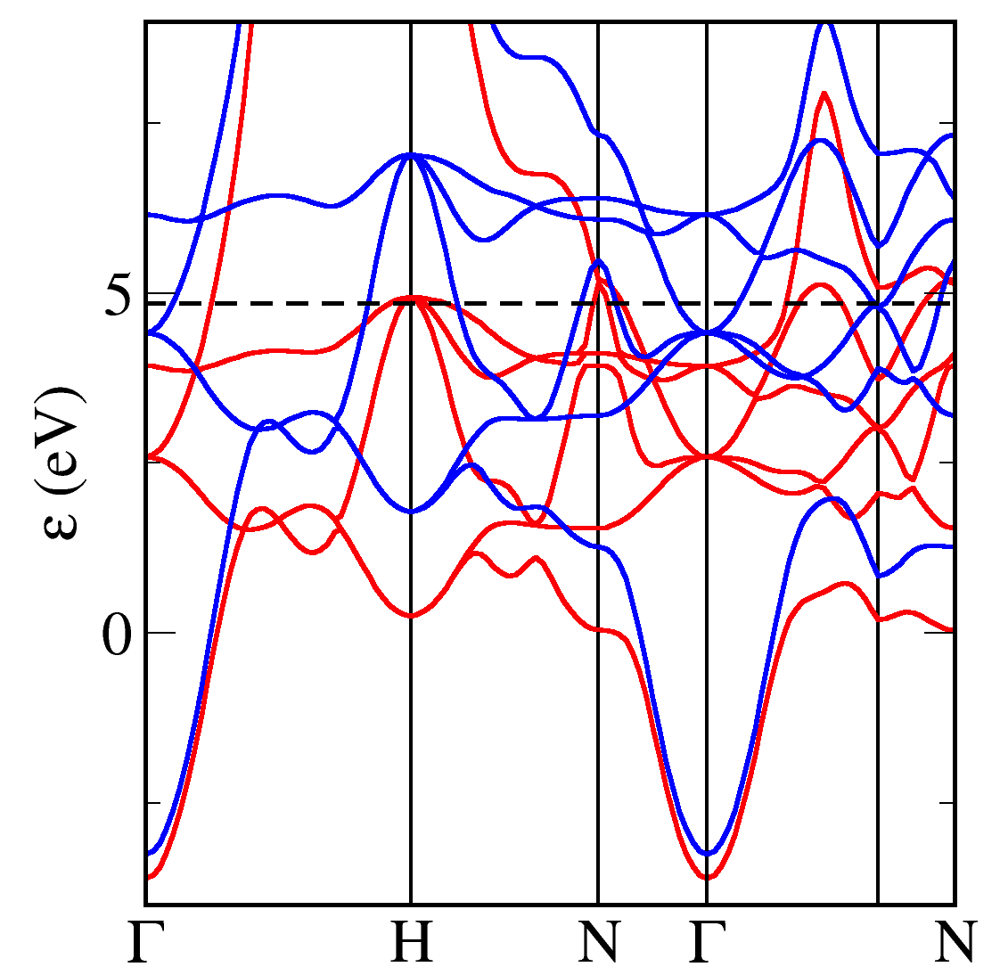
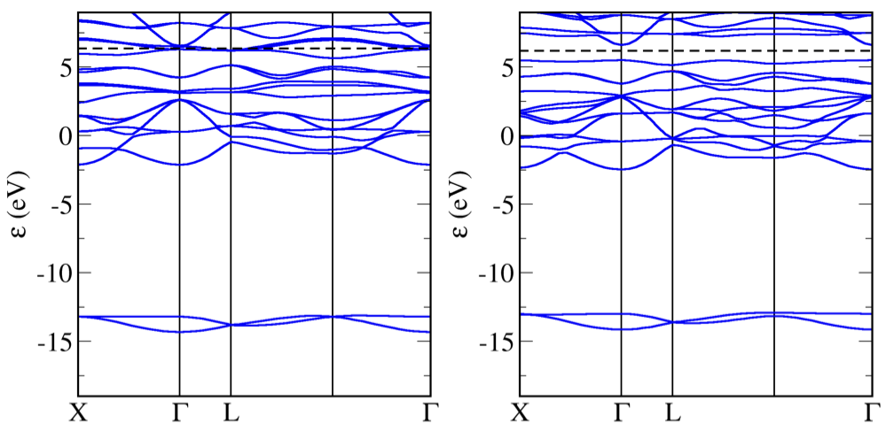

Magnetic Materials
Iron
! Fe.cell
%BLOCK LATTICE_CART
-1.433199999999999 1.433200000000001 1.433200000000001
1.433200000000001 -1.433200000000000 1.433200000000000
1.433200000000000 1.433200000000000 -1.433200000000000
%ENDBLOCK LATTICE_CART
%BLOCK POSITIONS_FRAC
Fe 0.0000000000000000 0.0000000000000000 0.0000000000000000
%ENDBLOCK POSITIONS_FRAC
symmetry_generate
! Kpoint grid for the Groundstate (SCF) calculation
kpoint_mp_grid 8 8 8
! kpoint path through the Brillouin Zone for the Bandstructure
%BLOCK spectral_KPOINT_PATH
0.0 0.0 0.0 !G
0.5 0.5 0.5 !H
0.5 0.0 0.0 !N
0.0 0.0 0.0 !G
0.75 0.25 -0.25 !P
0.5 0.0 0.0 !N
%ENDBLOCK spectral_KPOINT_PATH
spin_polarised true in order to allow the up and down spin electrons to take different configurations. It is important to start the calculation with an initial spin density using e.g. spin: 1. The value of the initial spin should not affect the final answer - a non-zero value is just needed to break the symmetry between the spin channels.
! Fe.param
task spectral ! The TASK keyword instructs CASTEP what to do
spectral_task bandstructure !
xc_functional LDA ! Which exchange-correlation functional to use.
cut_off_energy 500 eV !
grid_scale 2.0 !
opt_strategy speed ! Choose algorithms for best speed
spin 1 ! Set the spin in the original cell to 1.
spin_polarised true ! Run a spin polarised calculation
spectral_nbands 6 ! number of bands to compute during the BS run
castep file e.g.

Note
The band structure has similarities with that of Copper - and other 3d elements - with flat 3d bands and dispersive s bands. We colour code the bands according to their spin chactacter (red=up, blue=down). We can see that there is an almost constant exchange splitting of 1.5eV between the up and down 3d bands. The splitting between the s-like bands is much smaller. More up states lie below the fermi energy than down states - hence the net spin of the unit cell.
FeO
FeO is an anti-ferromagnetic oxide. We set up the calculation with initial spins on the two Fe atoms pointing in opposite directions.
! FeO.cell
%BLOCK LATTICE_CART
1.768531594289456 0.000000000000001 5.002162732258922
-0.884265797144728 1.531593288050063 5.002162732258921
-0.884265797144728 -1.531593288050063 5.002162732258922
%ENDBLOCK LATTICE_CART
%BLOCK POSITIONS_FRAC
O 0.75 0.750 -1.250
O -0.75 -0.750 1.250
Fe 0.00 0.000 -0.000 spin=-4.0
Fe 1.50 -0.500 -0.500 spin=4.0
%ENDBLOCK POSITIONS_FRAC
kpoints_mp_grid: 6 6 6
symmetry_generate
%block spectral_kpoint_path
0.500 0.500 0.000
0.000 0.000 0.000
0.500 0.500 0.500
0.000 0.500 0.000
0.000 0.000 0.000
%endblock spectral_kpoint_path
! FeO.param
task : spectral ! The TASK keyword instructs CASTEP what to do
xc_functional : PBE ! Which exchange-correlation functional to use.
cutoff_energy 600 eV
opt_strategy speed ! Choose algorithms for speed.
nextra_bands : 6
spin_polarized : true
A PBE calculation incorrectly finds FeO to be a metal (bandstructure on left below).
Add the following to the cell file to run a PBE+U calculation
FeO band structure with PBE (left) and with PBE+U (right)
Note
Adding a Hubbard U term to the calculation opens the band gap and FeO is (correctly) predicted to be an antiferromangetic insulator.